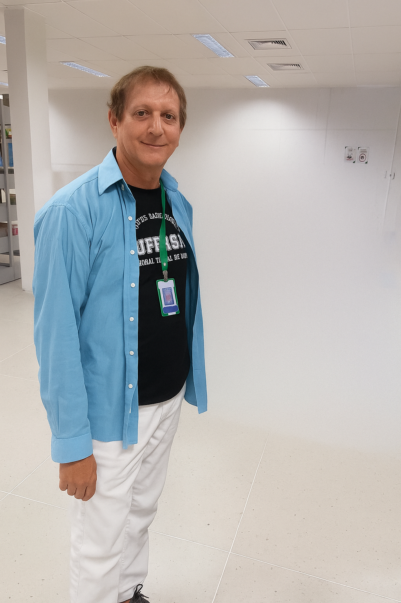

Especialização
Helder Romero Maia Duarte
Matrícula SIAPE: 1177662
Cargo
BIBLIOTECARIO-DOCUMENTALISTA
- Aniversário
- 21/09
- Ramal
- Indisponível
- Telefone
- Indisponível
CORPO ADMINISTRATIVO / CAMPUS ANGICOS
Conheça a equipe e suas unidades.
Matrícula SIAPE: 1177662
BIBLIOTECARIO-DOCUMENTALISTA
Matrícula SIAPE: 2135395
TRADUTOR INTERPRETE DE LINGUAGEM SINAIS
Matrícula SIAPE: 1856037
ASSISTENTE EM ADMINISTRACAO

Matrícula SIAPE: 350444
ASSISTENTE EM ADMINISTRACAO
Matrícula SIAPE: 2022250
ASSISTENTE EM ADMINISTRACAO
Matrícula SIAPE: 2167434
ASSISTENTE EM ADMINISTRACAO

Matrícula SIAPE: 1826350
ASSISTENTE EM ADMINISTRACAO

Matrícula SIAPE: 1752424
ASSISTENTE EM ADMINISTRACAO